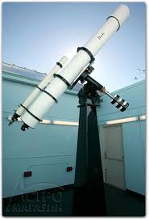
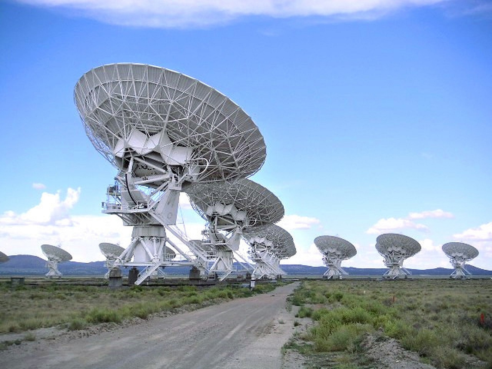
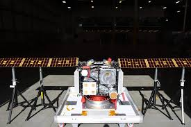
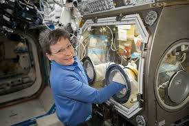
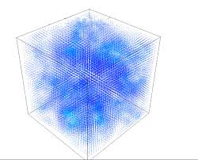

Главные вопросы космологии
Человечество тысячелетиями смотрит на звёздное небо, пытаясь разгадать тайны вселенной. Мы запускаем телескопы в космос, отправляем зонды к другим планетам, строим гигантские обсерватории. Но чем больше мы узнаём, тем больше появляется новых вопросов.
Вывод: исследование космоса — это бесконечное путешествие, где каждое открытие ведёт к новым загадкам.
Современные технологии и международное сотрудничество позволяют нам заглянуть в самые далёкие уголки вселенной и понять наше место в космосе.
Методы исследования
Пять основных подходов к изучению космоса
-

Оптические наблюдения
Изучение небесных тел в видимом диапазоне света с помощью телескопов.
-

Радиоастрономия
Наблюдение космических объектов в радиодиапазоне электромагнитного спектра.
-

Космические миссии
Отправка зондов и аппаратов для непосредственного исследования планет и астероидов.
-

Эксперименты на МКС
Проведение научных исследований в условиях микрогравитации на орбитальной станции.
-

Компьютерное моделирование
Создание симуляций космических процессов для проверки научных теорий.
Видео о космосе
Для тех, кто хочет узнать больше о вселенной
История космической гонки.
В 1957 году Советский Союз запустил первый искусственный спутник Земли, положив начало космической эре. Через четыре года Юрий Гагарин стал первым человеком в космосе. Эти достижения вдохновили весь мир и показали, что границы возможного гораздо шире, чем мы представляли.
Теория Большого взрыва
Происхождение нашей вселенной.
Подробнее →Цифры и факты
О вселенной и космосе
-
13,8 миллиарда лет
Возраст нашей вселенной
-
2 триллиона
Число галактик в наблюдаемой вселенной
NASA, 2016
-
100 000 световых лет
Диаметр галактики Млечный Путь
-
400 миллиардов
Число звёзд в нашей галактике
-
547 дней
Рекорд пребывания человека в космосе
Валерий Поляков, 1995
-
400 км
Высота орбиты МКС
-
1969 год
Первая высадка человека на Луну
-
2021 год
Запуск телескопа Джеймс Уэбб
Космос: персональная одиссея
Мы состоим из звёздной пыли. Мы — способ космоса познать себя. Космос есть внутри нас. Мы сделаны из звёздного вещества. Мы — это вселенная, которая обрела самосознание.
Карл Саган
Принципы освоения космоса
Ключевые направления космических исследований
-
1
Изучение экзопланет в зоне обитаемости.
-
2
Поиск признаков внеземной жизни.
-
3
Исследование тёмной материи и энергии.
-
4
Разработка технологий для дальних полётов.
-
5
Создание лунных и марсианских баз.
-
6
Защита от космического излучения.
-
7
Международное сотрудничество в космосе.
-
8
Развитие многоразовых ракет-носителей.
-
9
Использование ресурсов астероидов.
-
10
Подготовка к межзвёздным миссиям.
Полезные ресурсы
Больше материалов о космосе и астрономии